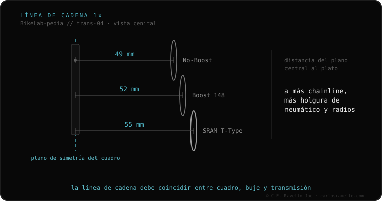

La línea de cadena (chainline) es la distancia, en milímetros, desde el plano central del cuadro hasta el centro del plato (o del cassette). Que el plato y el cassette estén bien alineados es lo que evita ruidos, desgaste y caídas de cadena, sobre todo en monoplato (1x). Los valores estándar dependen del ancho del buje trasero: 49 mm en cuadros no-Boost, 52 mm en Boost (eje 148 mm) y 55 mm en el sistema SRAM T-Type. Si tu plato no respeta la línea correcta, la cadena roza o se cae.
Es la medida invisible que decide si tu transmisión va silenciosa o suena a lata. Y casi nadie la mira antes de cambiar plato o bielas.
La cadena trabaja mejor cuanto más recta va entre plato y piñón. En doble plato (2x) el esfuerzo se reparte; en 1x, con un solo plato y un cassette enorme, una línea mal puesta genera ruido constante y saltos. La línea no se cambia con bielas más largas: se ajusta con el offset del plato, es decir, cuánto se desplaza el plato hacia adentro o afuera respecto a la biela.

El offset del plato debe corresponder al ancho del eje trasero de tu cuadro. Un plato pensado para línea de 49 mm en un cuadro Boost (52 mm) deja la cadena demasiado adentro: roza las vainas y se cae. Antes de comprar plato o bielas, confirma si tu cuadro es Boost, no-Boost o T-Type.
Si dudas qué cassette, núcleo o cadena le entra a tu bici, mándanos el caso. Diagnóstico real, sin venderte nada. Escríbenos por WhatsApp
Mide del centro del tubo de sillín al centro de los dientes del plato y suma medio diámetro del tubo. Lo normal: 49 mm no-Boost, 52 mm Boost.
Para la mayoría de bielas de montaje directo en cuadro Boost (148 mm), un plato con offset de 3 mm hacia adentro da los 52 mm estándar.
No, solo distinta. Cada estándar (49/52/55) corresponde a un ancho de buje; lo importante es que plato y cassette coincidan.
© 2026 BikeLab Studio. Contenido bajo CC BY 4.0: puedes copiarlo, traducirlo y publicarlo, incluso con fines comerciales. La cita es obligatoria. Sin atribución, la licencia se revoca de forma automática (CC BY 4.0, §6.a) y el uso pasa a ser una infracción de derechos de autor: solicitamos la retirada del contenido y su desindexación. · Diseño y propiedad: Carlos Ravello Joo